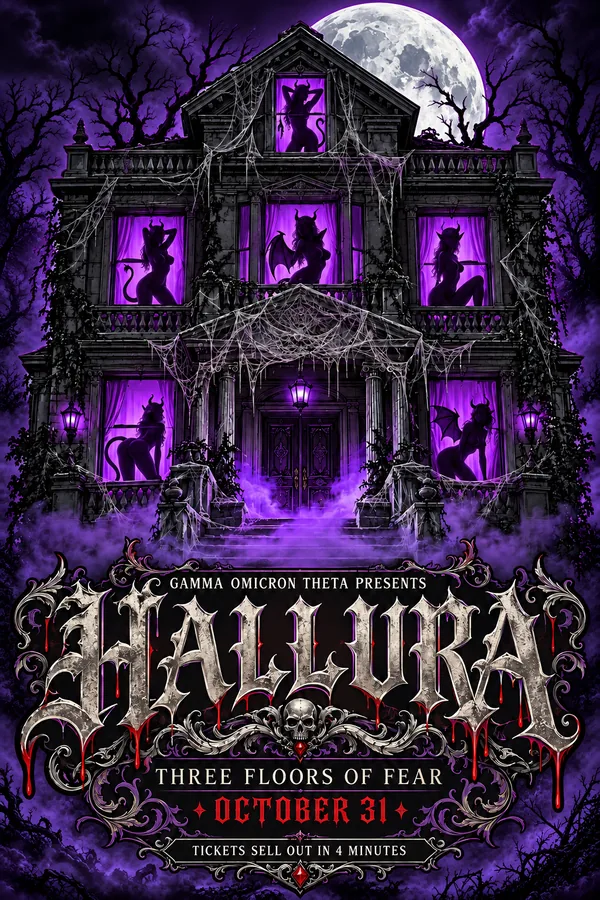
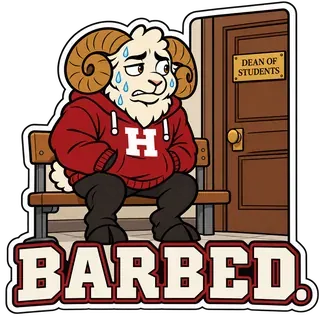
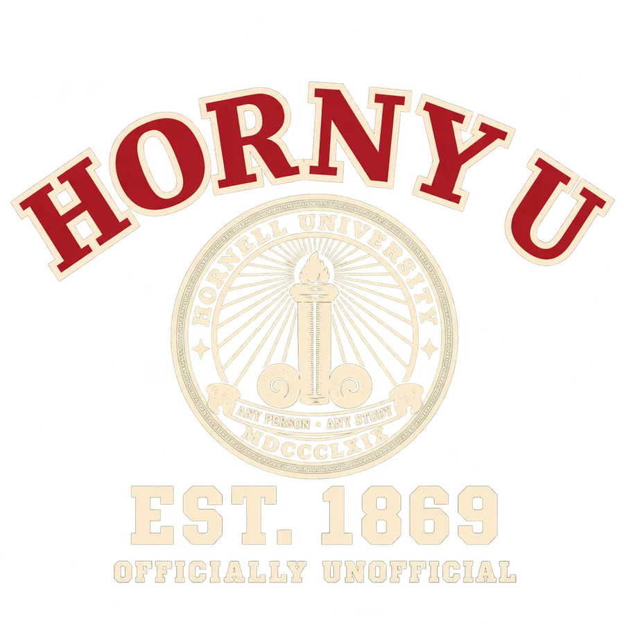
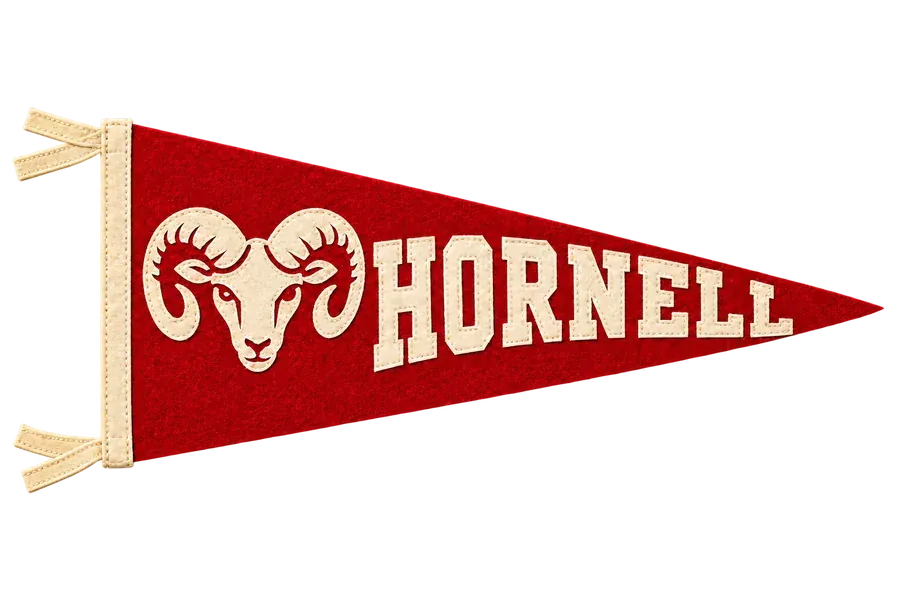
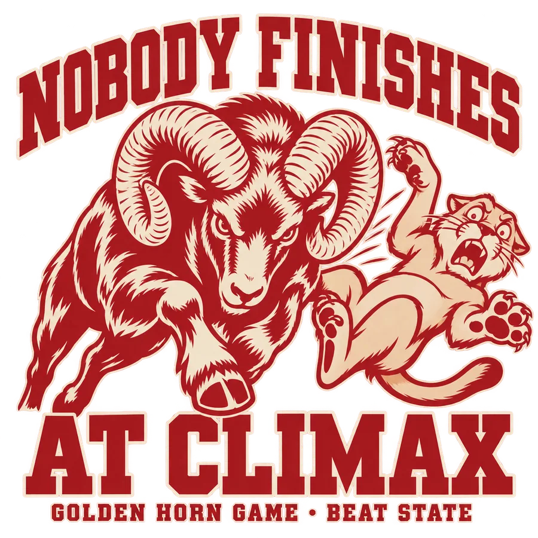
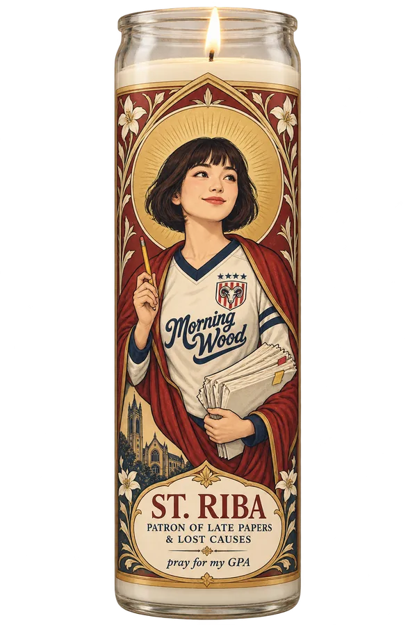

PSA: the dryer ghost is back on Hews 5. It took my boxers AND my roommate's. We know it's not a ghost.
▲ 412Hornell University · Founded 1869 · Hornell, New York
East Hill · after dark
A private research university on East Hill above the Canisteo River: stone towers, a waterfall gorge through the middle of campus, 19,500 undergraduates and a hockey team the whole region worships.
31,000 students, one hill and one app that ranks them every Sunday at midnight. The library closes at two. Nothing else does.
Hornell at a glance
Ten minutes downhill to town, a miserable twenty back up. Hornell has been teaching on East Hill since 1869, under the motto carved over the Wetmore Gate.
Every September someone chalks “...any position” under the motto on the Wetmore Gate. Every October facilities scrubs it off. Nobody has ever been caught.
Hornell Today
What's actually happening
Athletics · Oct 16
Coach Ana Ferreira's three-time national champions swept their home opener in three sets.
Academics · Oct 12
The Investment Club's student-run fund also crossed $2 million this fall.
Campus · Oct 8
Kessler's glass science wing, a gift of Henry Wang, celebrates five years of research. Built to grow.
Arts · Oct 5
Four Mainstage productions and a Black Box series run through April.

GOTH · Oct 31
Three floors of a rented frat house, a fog machine in every room and a confession booth in the attic.

Horn Week · Nov 16–20
Climax got him in 2019 and 2023. Bring a sleeping bag. People usually bring two.

Main Street
It isn't even Hump Day. Luc says it's about the barn wood. Luc has said that for nine years.

Hews Hall
Mostly men's boxers. The laundry room sign has a theory about its height.

Around East Hill
Where everyone actually is
Our history
Heritage
Engraved by a railroad draftsman in 1869: a torch of learning between two curled ram's horns, inside a ring reading Hornell University and MDCCCLXIX. It sat on every diploma for 129 years. In 1998 the Board adopted the current shield, an open book over a ram's head in a wreath of maple leaves.
It sat on every diploma for 129 years, until a trustee's wife asked at the 1998 Commencement what exactly it was supposed to be. The bootleg HORNY U hoodie with the old seal outsells official merch three to one, and seniors still pay the copy shop to reprint their diplomas with it. The administration calls it the heritage seal. Bleat calls it what it looks like.

Campus life

From the freshman towers to lofts in an old railroad roundhouse.
Sock on the door means come back later. Hews means you lost the lottery.

Two dining halls, a famous diner and coffee on every corner.
Every after-party ends at Sunny's at 4 a.m. with a Dumpster Plate.

A downtown of brick storefronts, live music and a historic firehouse.
The Rut or Embers. By 1:30 a.m. half of each line has crossed over.

The chimes, Gorge Day, Homecoming and the last day of classes.
Hump Day. The biggest party of the year has its own hill.

An independent daily newspaper and a student radio station since 1958.
Bleat ranks you on Sundays. Dizzy reads your secrets at 2 a.m.

More than 500 student organizations, from a cappella to a $2 million fund.
Master Debaters, the Barbell Club and a car wash in sports bras.
Calendar
| Date | Time | Event | Where |
|---|---|---|---|
| Tue Oct 20 | 7:30 p.m. | PSY 101 prelim | Pulaski 101 and Kessler Auditorium |
| Thu Oct 22 | 7:00 p.m. | Hornell Players: opening night | Wiener Center Mainstage |
| Fri Oct 23 | 7:00 p.m. | Women's volleyball vs Dominion University (Ohio) | The Ram Pen |
| Sat Oct 24 | 12:00 p.m. | Football vs Chautauqua State · Red Out | Schuyler Field |
| Sat Oct 24 | All day | Apple picking and the corn maze | Summerfield Orchards |
| Fri Oct 30 | 5:00 p.m. | ZomVille Run 5K | Maple City Park |
Trending on Bleat
PSA: the dryer ghost is back on Hews 5. It took my boxers AND my roommate's. We know it's not a ghost.
▲ 412
Gruber isn't curving it. Stop lighting candles at St. Riba's. (I lit one.)
▲ 905
brody haskins at sunny's at 4am eating a dumpster plate alone. we don't talk about it
▲ 1.2k
to the guy in the green beanie who held the door at cockburn: dizzy has your dedication. listen thursday
▲ 238
horn list drops sunday. the thirst traps started on WEDNESDAY this week
▲ 377
climax got him in 2019 and 2023. not this year. tents go up monday
▲ 2.1kThe Campus Store
The bootleg table, Lot K
Official Hornell apparel at the Union bookstore and online. Members of the Ram family get 10% off on game days.
Cash only, game days only, behind KEG's tent. Nothing here is licensed and everything here sells out.
$64
The bookstore's best seller, every year since the family stopped sending letters.

$18
Hornell red, a ram's head, a wall in the Long Johnsons.
$22
Sold at the Union front desk the week before move-out.
$24
Sold by the Hornell Players at every premiere.
$40 cash
The 1869 seal on the front. Outsells official merch three to one.

$15
Banned on the stadium screens since 2011. Sold in Lot K.

$9
For prelims, late papers and boys who don't text back.
not for sale
You get one when you pledge. Or when you date a brother long enough.